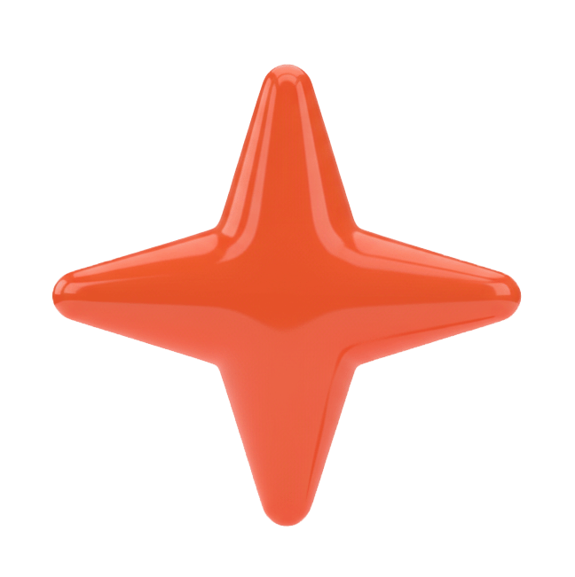

Hey there,
Interactive Media Designer specializing in Web Development, UI/UX, and Visual Media. Currently pursuing a Diploma at Algonquin College, I combine a technical background in JavaScript and CMS server-side development with creative expertise in motion graphics and photography. I am passionate about creating seamless, high-performance digital experiences.
